4420D10 REAR SUSPENSION AXLE - R+R INCLUDES BLEEDING
- Path
- Procedures > 44 SUSPENSION AND WHEELS > 4420 REAR SUSPENSION > 4420D REAR SUSPENSION AXLE/CROSSBEAM > 4420D10 REAR SUSPENSION AXLE - R+R INCLUDES BLEEDING
- Kind
- repair procedure (removal / refitting; the operation number is the code)
- Applies to
- all engines; all production periods
- Interactive page
- https://sloeber94.github.io/elrnDB-fPnd/en/#/2752814
Applies to: all engines; all production periods
 Removing
Removing
 Refitting
Refitting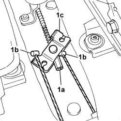
Applies to: all engines; all production periods
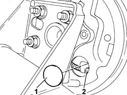
Applies to: all engines; all production periods
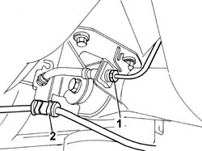
Applies to: all engines; all production periods
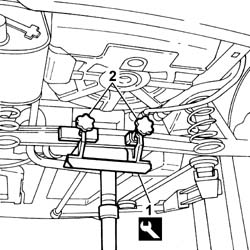
Applies to: all engines; all production periods
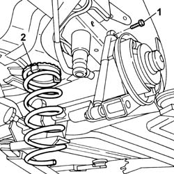
Applies to: all engines; all production periods
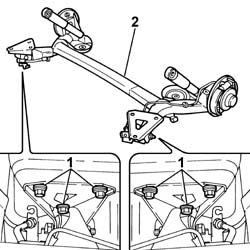
Applies to: all engines; all production periods
Refitting
Removing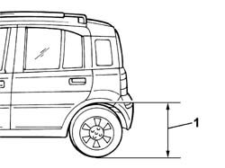
Applies to: engines: 1.2 8v; all production periods; only with equipment: 4x4
Removing
RefittingPosition the vehicle on a lift.
Raise the vehicle.
Op. 1076B11 FULL EXHAUST PIPING - R.R. FOR FOUR-WHEEL DRIVE MODELS
1. Undo the fixing nuts (1a) and remove the protective centre guard (1b) for the propeller shaft universal joint.
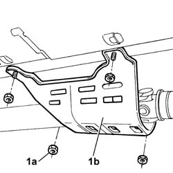
Applies to: engines: 1.2 8v; all production periods; only with equipment: 4x4
1. Undo the fixing nuts (1a) and remove the propeller shaft rear safety bracket (1b).
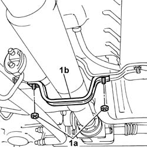
Applies to: engines: 1.2 8v; all production periods; only with equipment: 4x4
1. Undo the bolts fixing the propeller shaft rear joint to the viscous joint and move the shaft aside.
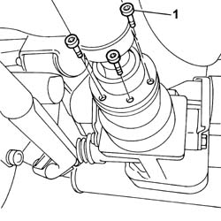
Applies to: engines: 1.2 8v; all production periods; only with equipment: 4x4
Op. 4450B08 RIGHT REAR WHEEL R R
Position a suitable container for collecting the transmission fluid.
1. Undo the plug and drain the rear differential fluid.
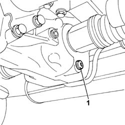
Applies to: engines: 1.2 8v; all production periods; only with equipment: 4x4
Op. 4420A30 L/H OR R/H REAR SUSPENSION DAMPER (ONE) - R+R
[Both]
Undo the fixing bolts and move the two ABS sensors aside.
1. Release the handbrake cable at both rear hubs.
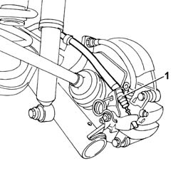
Applies to: engines: 1.2 8v; all production periods; only with equipment: 4x4
1. Remove the fastening clip and undo the connector (1a) and disconnect the brake fluid pipe (1b).
Work on both sides of the vehicle.
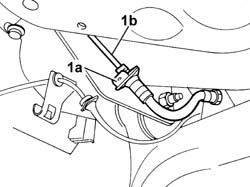
Applies to: engines: 1.2 8v; all production periods; only with equipment: 4x4
1. Undo the bolts fixing the rear differential left support.
2. Remove the rear differential left support.
3. Undo the bolts fixing the rear differential right support to the rear suspension crossmember.
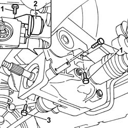
Applies to: engines: 1.2 8v; all production periods; only with equipment: 4x4
1. Position a suitable hydraulic lift and plate (1a) and brackets (1b) supporting the rear differential and secure them.
Description | Code | Function | |
|---|---|---|---|
1a | Plate | 1.870.856.000 | Support |
Description | Code | Function | |
|---|---|---|---|
1b | Brackets | 1.870.847.000 | Support |
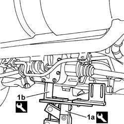
Applies to: engines: 1.2 8v; all production periods; only with equipment: 4x4
1. Undo the bolt securing the rear differential to the rear support.
2. Undo the bolts (2a) fixing the anti-roll bar (2b) to the supports and release it.
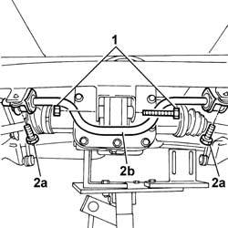
Applies to: engines: 1.2 8v; all production periods; only with equipment: 4x4
Op. 4420C10 REAR SUSPENSION STABILIZER BAR - R+R
1. Undo the fixing bolts and remove the rear suspension axle.
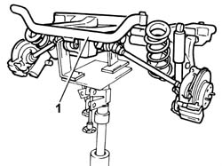
Applies to: engines: 1.2 8v; all production periods; only with equipment: 4x4
Refitting
RemovingFit the rear suspension axle assembly and tighten the fixing bolts to torque.
Op. 4420C10 REAR SUSPENSION STABILIZER BAR - R+R
Tighten the bolt fixing the differential to the rear support to torque.
Value - daNm | Fastening | Component | Ø | |
|---|---|---|---|---|
- | 10 | Bolt | - | M12 X 1.25 |
Tighten the bolts fixing the rear anti-roll bar to the supports to torque.
Value - daNm | Fastening | Component | Ø | |
|---|---|---|---|---|
- | 3.5 | Bolt | - | M8 |
Remove the hydraulic lift and plate and mounting brackets.
Description | Code | Function | |
|---|---|---|---|
- | Plate | 1.870.856.000 | Support |
Description | Code | Function | |
|---|---|---|---|
- | Brackets | 1.870.847.000 | Support |
Fit the differential left support in place and tighten the bolts fixing it to the differential to torque.
Value - daNm | Fastening | Component | Ø | |
|---|---|---|---|---|
- | 8 | Bolt | - | M10 X 1.25 |
Tighten the bolts fixing the differential supports to the rear suspension crossmember to torque.
Value - daNm | Fastening | Component | Ø | |
|---|---|---|---|---|
- | 8 | Bolt | - | M10 X 1.25 |
1. Undo the cap and top up the differential fluid level.

Applies to: engines: 1.2 8v; all production periods; only with equipment: 4x4
Bleed the braking system.
Op. 4450B08 RIGHT REAR WHEEL R R
Tighten the bolts fixing the propeller shaft rear coupling to the viscous joint.
Value - daNm | Fastening | Component | Ø | |
|---|---|---|---|---|
- | 4 | Bolt | - | M8 |
Place the rear safety bracket in position and tighten the fixing nuts.
Tighten the nuts fixing the centre guard protecting the propeller shaft universal joint.
Op. 1076B11 FULL EXHAUST PIPING - R.R. FOR FOUR-WHEEL DRIVE MODELS
Lower the lift.
Remove the vehicle from the lift.
Topics linked from this page (4)
- 1076B11 FULL EXHAUST PIPING - R.R. FOR FOUR-WHEEL DRIVE MODELS
- 4420A30 L/H OR R/H REAR SUSPENSION DAMPER (ONE) - R+R
- 4420C10 REAR SUSPENSION STABILIZER BAR - R+R
- 4450B08 right rear wheel r r